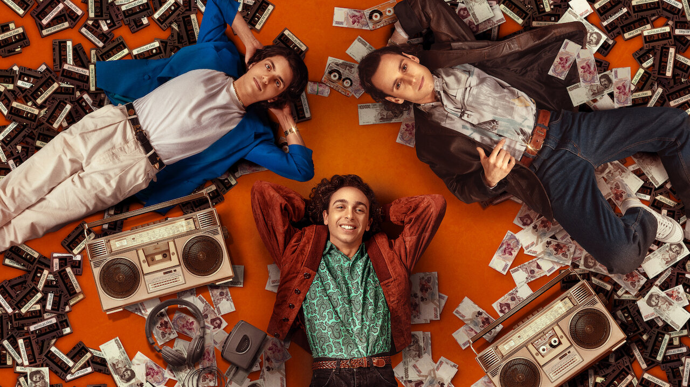
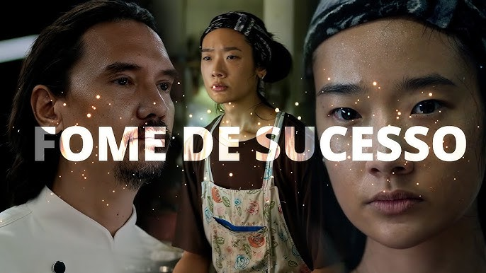
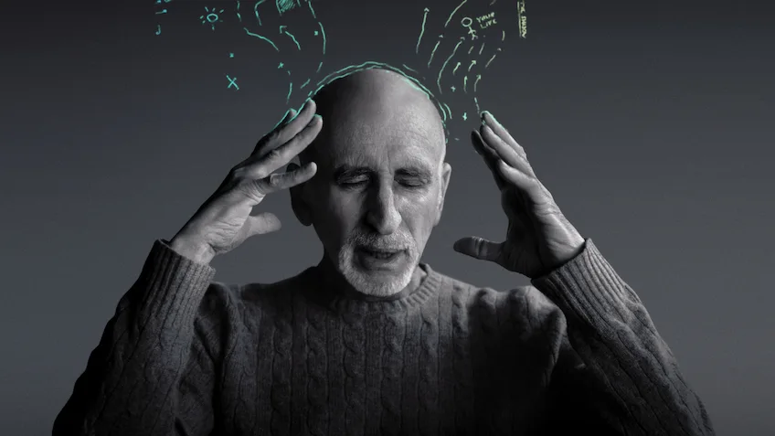
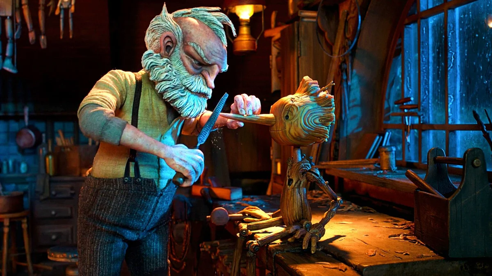
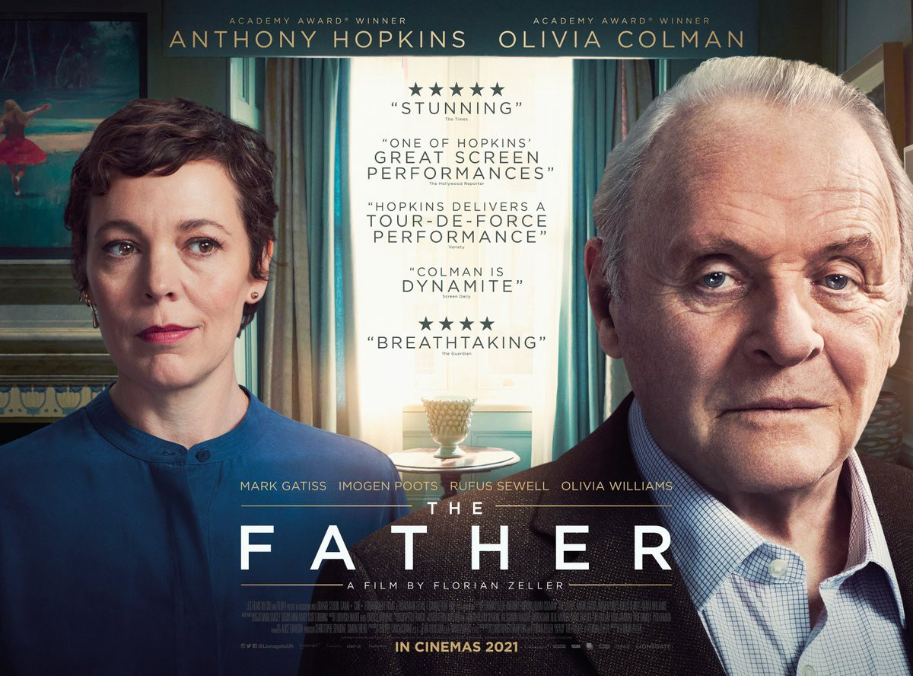
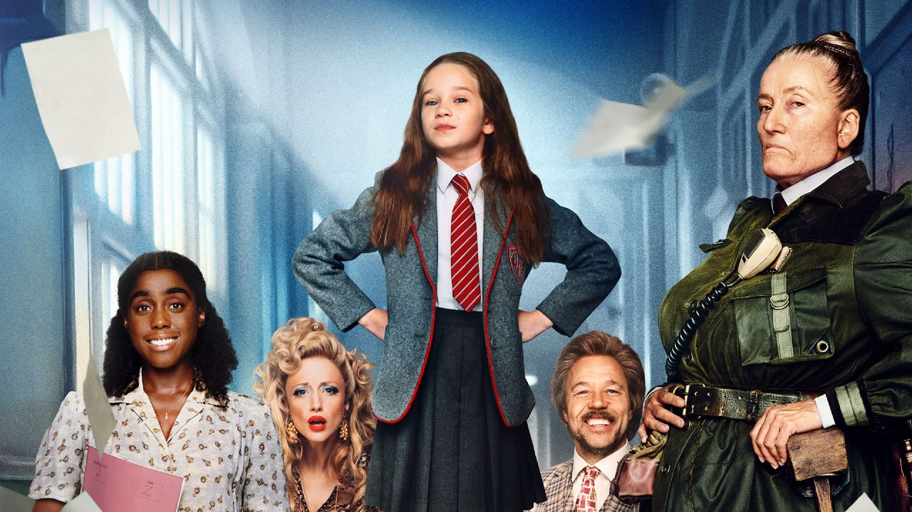

10 melhores filmes para assistir na Netflix em 2023
1. Mixed by Erry (2023)
Mixed by Erry é uma produção da Netflix Itália assinada por Sydney Sibilia. Se passa nos anos 80 e conta a história real de Enrico Frattasio, um jovem que trabalha em uma loja de discos e deseja ser DJ
Depois que a loja fecha, Enrico, ou Erry, recebe do seu patrão muitos discos não vendidos. Assim, se junta aos irmãos Pepe e Ângelo e começa a produzir fitas cassetes piratas, democratizando o acesso à música de forma ilegal e se tornando milionário.
2. Cabaré Eldorado - O alvo dos nazistas (2023)
O documentário alemão é assinado por Benjamin Cantu e Matt Lambert. Aborda a relação entre o famoso Cabaré Eldorado, frequentado pela comunidade LGBT+ nos anos 20 em Berlim e os horrores do nazismo.
No longa vemos como esse estabelecimento se transformou em motivo de perseguição à cultura queer naquele momento conturbado da história. O filme traz com entrevistas, imagens de arquivo e a fala de especialistas.
3. A descoberta perfeita (2023)
Essa é uma comédia romântica dirigida por Numa Perrier baseada no livro de Tia Williams de mesmo nome.
Aqui somos apresentados à editora de moda Jenna Jones e seus dilemas profissionais e amorosos. Ao ser despedida do trabalho e terminar um relacionamento, Jenna embarca para Nova York buscando mudar de vida.
Lá começa a trabalhar para a milionária Darcy Hill e descobre que Eric, o filho da patroa, é o homem por quem havia se apaixonado pouco tempo antes. Para piorar, Eric passará a trabalhar na mesma empresa. Agora Jenna precisa escolher entre o amor ou a carreira.
4. Fome de sucesso (2023)

Essa é uma produção dirigida pelo tailandês Sittisiri Mongkolsiri que vem se destacando entre o público e a crítica. A história acompanha a jovem Aoy, uma cozinheira humilde que ganha a oportunidade de trabalhar como aprendiz em um restaurante renomado.
Ela fica entusiasmada com o novo trabalho e com a chance de se tornar uma chef de cozinha. Mas a convivência com o chef Paul e seu comportamento agressivo podem ser um grande obstáculo.
5. Agente infiltrado (2023)
Com direção de Morgan S. Dalibert, esse filme de ação francês promete adrenalina e suspense. Aqui seguimos os passos de Adam Franco, um agente secreto que busca frear um ataque terrorista de um grupo de mafiosos.
Entretanto, ao conhecer e se afeiçoar ao filho de um dos criminosos, Adam terá que fazer escolhas difíceis.
6. O método de Stutz (2022)
7. Pinóquio por Guillermo del Toro (2022)
A famosa história infantil de Pinóquio ganha uma nova versão com essa belíssima animação em stop-motion de Guillermo del Toro. A produção chegou na Netflix no final de 2022 e conta a história do garoto de madeira que ganha vida.
Diferente da abordagem leve e singela que é mais conhecida, aqui a trama tem traços sombrios, trazendo elementos do conto original do italiano Carlo Collodi.
A classificação etária é de 12 anos, pois o longa aborda temas complexos como o fascismo na Segunda Guerra, o luto e o alcoolismo, além de traumas de infância.
8. Nada de Novo no Front (2022)
Com direção e roteiro de Edward Berger, Nada de Novo no Front é uma adaptação do livro de mesmo nome de Erich Maria Remarque.
A narrativa acompanha a vida do jovem Paul Baumer e dois amigos. Imbuídos de forte sentimento patriótico, eles decidem se alistar no exército alemão e servir na Primeira Guerra Mundial. Mas quando chegam ao front, logo se deparam com a terrível realidade da barbárie.
Um filme que trata de forma crua a brutalidade da guerra e o descaso com as vidas de milhares de adolescentes que deram sua juventude em nome de um projeto de poder.
9. Meu Pai (2021)

Meu pai é uma produção de 2021 ganhadora de diversos prêmios, incluindo o Oscar de melhor ator para Anthony Hopkins, que estrela o filme ao lado de Olivia Colmam.
Baseado em uma peça de teatro, a trama conta sobre um homem idoso que está cada vez mais vulnerável, mas nega a ajuda da filha e passa a entrar em um mundo paralelo, suspeitando de todos e de seu entorno.
10. Matilda: o musical (2022)

Nos anos 90 outro filme contando a mesma história fez enorme sucesso. Além disso, a narrativa também ganhou musicais no teatro, que inspiraram o re-make.
A trama acompanha a vida de Matilda, uma garotinha muito inteligente que tem poderes mágicos. Ela vive com seus pais, muito fúteis, irresponsáveis e agressivos.
Apesar de estudar em uma escola rígida com uma diretora tirana, é na figura da amável professora que encontra acolhimento e parceria para vencer os desafios.